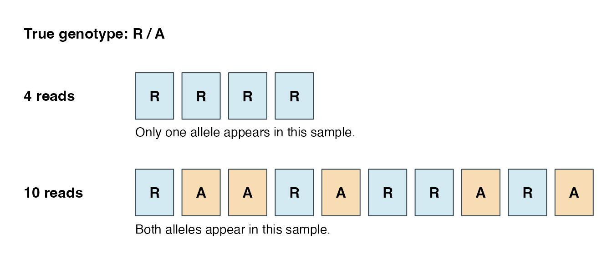
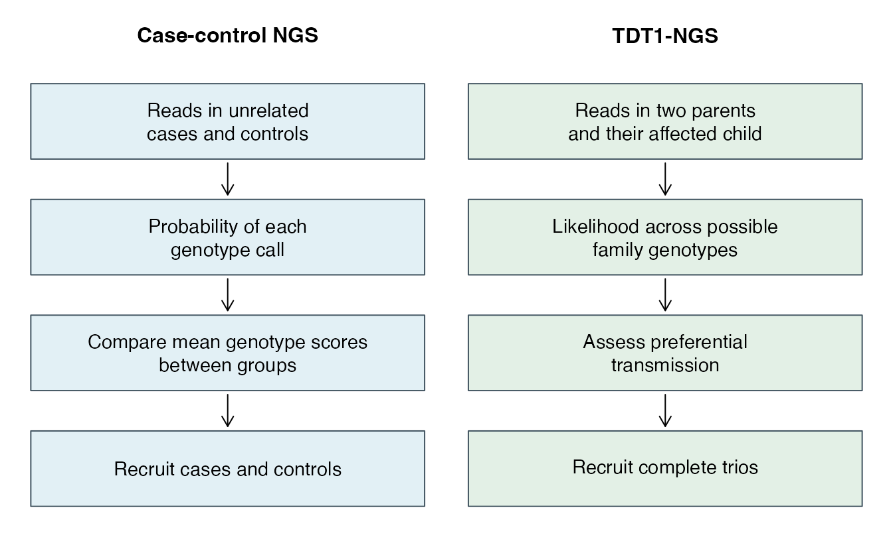
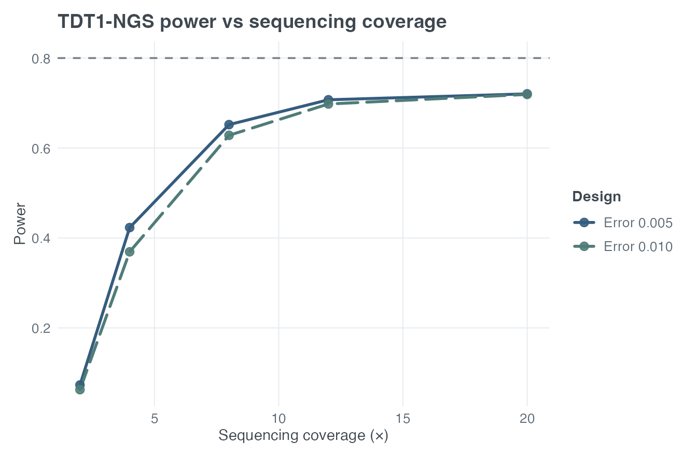
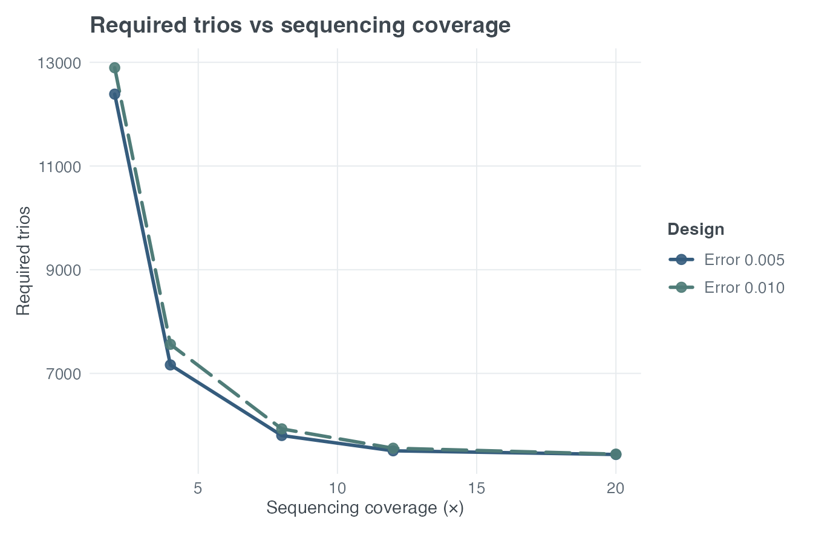
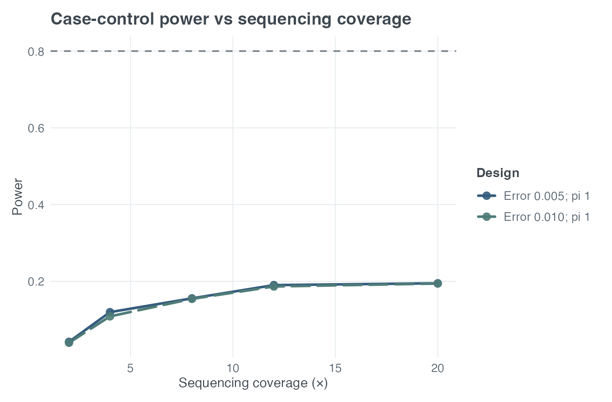
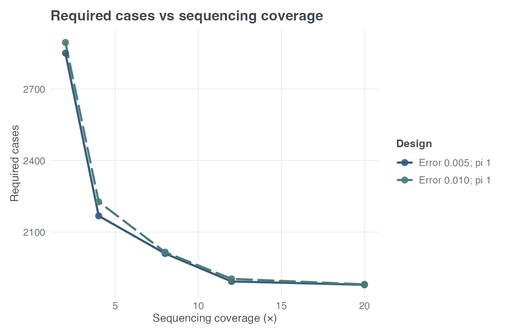

6. Sequencing-Based Genetic Study Design with PAWEH
paweh package authors
Source:vignettes/paweh-06-sequencing-study-design.Rmd
paweh-06-sequencing-study-design.RmdShould we sequence more deeply or recruit more people?
A team has funding to sequence DNA for a genetic association study. If it pays for more reads per participant, it may have fewer people to recruit. Would four reads at a variant site provide enough information, or would a deeper design give the study a better chance of detecting the proposed effect?
DNA sequencing measures the order of bases in pieces of DNA. A read is one such sequence of base calls. A read covering a variant site gives one observation of the base at that position. Depth, or coverage, counts those observations. In the fixed-depth examples here, 4×, 10× and 25× mean exactly 4, 10 and 25 reads at the site for a person with that depth.
We consider a site with two possible alleles, reference and alternate. A person carries two copies, one inherited from each parent. The genotype is coded 0, 1 or 2 according to the number of alternate copies. A base-call error occurs when a read reports the wrong allele, for example because of noise in measuring the sequencing signal. A genotype-call error occurs when the genotype inferred from all the reads differs from the person’s true genotype. How often that happens depends on how many reads sampled each copy as well as on the accuracy of each read.
The diagram follows a person carrying one copy of each allele. Each square is a possible read at the same site. Both rows illustrate accurate base calls.

Two possible read patterns from the same heterozygous genotype. R denotes reference and A denotes alternate.
With four independently sampled reads from a heterozygote, all four can come from the same allele by chance. With ten reads there are more opportunities to see both copies. These drawings illustrate possible outcomes. The calculations below sum the probabilities of the possible read counts.
What happens with perfectly accurate reads?
Set the per-read error probability to zero and compare two depths. Each row of the matrix below starts from a known true genotype. Read across the row to see the probabilities of the three possible calls.
list(
coverage_2 = ngs_genotype_error_matrix(2, 0),
coverage_10 = ngs_genotype_error_matrix(10, 0)
)
#> $coverage_2
#> called_0 called_1 called_2
#> true_0 1.00 0.0 0.00
#> true_1 0.25 0.5 0.25
#> true_2 0.00 0.0 1.00
#>
#> $coverage_10
#> called_0 called_1 called_2
#> true_0 1.0000000000 0.0000000 0.0000000000
#> true_1 0.0009765625 0.9980469 0.0009765625
#> true_2 0.0000000000 0.0000000 1.0000000000At 2×, a true heterozygote is called 0, 1 or 2 with probabilities 0.25, 0.50 and 0.25. At 10× its probability of a correct call is 0.99805. For depth , the chance that every read comes from the same copy is in this model. That remaining sampling uncertainty explains why setting base-call error to zero still leaves some wrong genotype calls.
Choose the design by what is sampled
If the team recruits unrelated cases and controls, it can compare genotype scores across the two groups. If it recruits affected children with both parents, it can ask which allele a parent transmitted to the affected child. The diagram follows the same kind of read evidence through each analysis.

Two ways to use reads at one biallelic site. Each column ends in a recruitment target with different units.
One poor genotype call can move a case or control into the wrong score category. In the family design, uncertain genotypes can still contribute evidence through the probabilities of the observed read counts. The two methods therefore answer different sampling questions. Both take proposed design parameters as inputs. FASTQ, BAM and VCF processing and tests on individual records are outside these prospective calculations.
A few quantities recur throughout the examples:
-
Allele frequency is the fraction of allele copies
of a particular type in the source population. The minor allele
frequency (MAF) is the frequency of the less common allele. The
argument
pdrefers to the designated risk allele, which can be either allele. - Hardy–Weinberg equilibrium (HWE) supplies expected genotype proportions. With risk-allele frequency , these are for zero, one and two copies under random pairing of alleles. The trio examples also assume independent parental genotypes under random mating.
- Relative risk compares disease probabilities. If disease risks are and in two groups, their risk ratio is . An odds ratio (OR) compares with . Converting between them generally requires a baseline risk.
- Linkage disequilibrium (LD) means alleles at two sites occur together on chromosomes more or less often than their separate frequencies predict. A marker in LD with a disease allele can show an association even if the marker itself has no effect.
-
Power is the chance of rejecting the null
hypothesis under the proposed association. The significance
level,
alpha, specifies the nominal false-positive probability under the null. The minimum sample size needed (MSSN) answers the inverse question for a target power.
Affected-child trios: how much sequencing does a family need?
In a complete trio, both biological parents and their affected child provide DNA. A parent who carries both alleles could have transmitted either one. The transmission disequilibrium test (TDT) asks whether one allele is transmitted more often than expected to affected children. At low depth it can be unclear which genotypes the three people carry. Kim’s TDT1-NGS uses the read counts in the whole family to weigh each possible Mendelian inheritance pattern.
Kim’s adolescent idiopathic scoliosis example
Kim (2015) asked how many trios would give adequate power in an
adolescent idiopathic scoliosis (AIS) design. For the marker rs1400180
the planning frequency was 0.35. The study assumed symmetric per-read
error of 0.025, equal depth for each family member and a genome-wide
threshold of
.
Begin with the strongest effect and a target of 90% power. Kim describes
the effect in odds-ratio language. To reproduce this design the package
uses the numerical value 2 as its one-copy relative risk R1
in a multiplicative transmission model, with two-copy relative risk
R2 = R1^2. An odds ratio from a different study needs its
own risk-model justification.
kim_4x <- tdt_ngs_mssn(
power = 0.90,
pd = 0.35,
R1 = 2,
coverage = 4,
seq_error = 0.025,
alpha = 5e-8,
verbose = FALSE
)
kim_25x <- tdt_ngs_mssn(
power = 0.90,
pd = 0.35,
R1 = 2,
coverage = 25,
seq_error = 0.025,
alpha = 5e-8,
verbose = FALSE
)| Depth | Paper (trios) | Calculated (trios) |
|---|---|---|
| 4x | 654 | 654 |
| 25x | 416 | 416 |
Moving from 4× to 25× reduces the target from 654 to 416 complete trios, or from 1,962 to 1,248 people. More reads help distinguish plausible parent–child genotype patterns. Each trio then contributes more information about transmission. A team assessing cost would need prices for both recruitment and sequencing to compare the two plans.
The remaining designs change the effect size and the desired power. Each pair of rows holds both fixed while changing depth. The comparison column contains the six Table 3 benchmarks.
kim_table3 <- data.frame(
coverage = rep(c(4, 25), times = 3),
power = rep(c(0.90, 0.70, 0.10), each = 2),
R1 = rep(c(2.0, 1.8, 1.5), each = 2),
published_trios = c(654, 416, 716, 456, 733, 466)
)
kim_table3$paweh_trios <- c(
kim_4x$MSSN_trios,
kim_25x$MSSN_trios,
vapply(3:6, function(i) {
tdt_ngs_mssn(
power = kim_table3$power[i], pd = 0.35, R1 = kim_table3$R1[i],
coverage = kim_table3$coverage[i], seq_error = 0.025,
alpha = 5e-8, verbose = FALSE
)$MSSN_trios
}, numeric(1))
)| Depth | Target power | R1 | Table 3 trios | Calculated trios |
|---|---|---|---|---|
| 4 | 0.9 | 2.0 | 654 | 654 |
| 25 | 0.9 | 2.0 | 416 | 416 |
| 4 | 0.7 | 1.8 | 716 | 716 |
| 25 | 0.7 | 1.8 | 456 | 456 |
| 4 | 0.1 | 1.5 | 733 | 733 |
| 25 | 0.1 | 1.5 | 466 | 466 |
All six calculated integers match. For effect 1.8 and 70% target power the counts are 716 and 456. For effect 1.5 and 10% target power they are 733 and 466. The last design would detect only about one in ten associations of its proposed size. It illustrates the published calculation, rather than a conventional recruitment target.
Plan a study with 5,000 families available
Suppose the team expects a smaller genetic effect than in the first AIS example. The following assumptions use a setting from the design grid in Gordon, Finch, and Kim (2020, §5.4.4).
| Input | Value | Interpretation |
|---|---|---|
N |
5,000 | Complete, independent trios available for a power calculation. |
power |
0.80 | Target for the separate MSSN calculation. |
pd |
0.325 | Population frequency of the designated allele in the parental model. |
R1 |
1.2 | Disease risk with one copy relative to zero copies. The implied two-copy relative risk is 1.44. |
coverage |
12 | Each parent’s and child’s fixed read depth at this site. |
seq_error |
0.005 | Probability a read of either allele is reported as the other one. |
alpha |
5e-8 | Nominal significance threshold for the transmission test. |
Use tdt_ngs_power() for the available families and
tdt_ngs_mssn() to solve for the target. Both calls use the
same multiplicative model.
tdt_seq_power <- tdt_ngs_power(
N = 5000,
pd = 0.325,
R1 = 1.2,
coverage = 12,
seq_error = 0.005,
alpha = 5e-8,
verbose = FALSE
)
tdt_seq_mssn <- tdt_ngs_mssn(
power = 0.80,
pd = 0.325,
R1 = 1.2,
coverage = 12,
seq_error = 0.005,
alpha = 5e-8,
verbose = FALSE
)| Design quantity | Value |
|---|---|
| Power at 5,000 trios | 0.70727 |
| Required trios | 5507 |
| Total individuals | 16521 |
At 12×, 5,000 trios give 70.73% power. For 80% power, plan for 5,507 complete trios, or 16,521 individuals. The whole-trio design achieves 80.014% power. If 5,000 families is a firm ceiling, the coverage curves below show what additional reads can buy under these assumptions.
Advanced detail: the information in a trio
For each possible father, mother and child genotype, the likelihood gives the probability of their three read counts. Summing over the 15 genetically possible ordered trio states, weighted by their model probabilities, retains evidence from families whose genotypes are ambiguous. The transmission probability from an informative parent in this model is . Equal transmission under the null gives .
Kim’s Appendix B gives the design noncentrality parameter (NCP), the quantity used to predict separation from the null:
Here is the per-trio information under the null after allowing for nuisance parameters, including parental mating frequencies and read errors. The calculation compares the resulting noncentral chi-square distribution to the central one-degree-of-freedom cutoff. For MSSN it solves for the target NCP and rounds up to a complete family.
How sensitive is the result to who enters the family study?
A child enrolled as affected might have been misclassified. Alternatively, some correctly diagnosed families might have disease unrelated to the locus under study. The following settings extend the basic trio design.
| Argument | Example value | Meaning |
|---|---|---|
pheno_misclass, prev,
pi01
|
TRUE, 0.01, 0.05 | Switch on the diagnosis sensitivity, supply true prevalence and the false-positive probability among unaffected children. |
locus_het, heter_rate
|
TRUE, 0.25 | Switch on the independent sensitivity to the fraction of families unlinked to the locus. It also requires prevalence. |
father_coverage,
mother_coverage, child_coverage
|
6, 12, 20 | Override the shared read depth by family role. |
epsilon0, epsilon1
|
0.005, 0.015 | Set reference-to-alternate and alternate-to-reference read-error probabilities, respectively. |
In the first scenario prev = 0.01 is the true population
prevalence and pi01 = 0.05 is the probability of
classifying a truly unaffected child as affected. With many more
unaffected than affected children, even a modest false-positive rate can
strongly dilute the transmission signal.
tdt_pheno <- tdt_ngs_power(
N = 5000, pd = 0.325, R1 = 1.2,
coverage = 12, seq_error = 0.005,
pheno_misclass = TRUE, prev = 0.01, pi01 = 0.05,
alpha = 5e-8, verbose = FALSE
)| Scenario | NCP | Power |
|---|---|---|
| sequencing_only | 35.9607 | 0.70726532 |
| phenotype_misclassification | 0.9419 | 0.00000372 |
In the 5,000-trio design, this sensitivity calculation drops power
from 0.7073 to about 0.00000372. That last value is a
probability, well below 0.01%. Now consider a different concern:
heter_rate = 0.25 assigns a quarter of families to an
unlinked component, leaving 75% linked. Both sensitivities require
prev; the sequencing-only calculation does not use
prevalence.
tdt_het <- tdt_ngs_power(
N = 5000, pd = 0.325, R1 = 1.2,
coverage = 12, seq_error = 0.005,
locus_het = TRUE, prev = 0.01, heter_rate = 0.25,
alpha = 5e-8, verbose = FALSE
)| Scenario | NCP | Power |
|---|---|---|
| sequencing_only | 35.9607 | 0.7072653 |
| heterogeneity | 20.2279 | 0.1701006 |
With one quarter unlinked, power is 17.01%. Requesting both modifiers returns each comparison against the original 70.73% sequencing baseline. There is no jointly fitted phenotype-error and heterogeneity model.
How the sensitivities are calculated. The package
obtains an attenuation factor from the ordinary TDT. Its per-trio
coefficient is
,
using the probabilities of informative transmission and
non-transmission. It calculates
with and without one modifier and multiplies the sequencing NCP by their
ratio. The ordinary models use
,
maximal positive LD
()
and a linked-family recombination parameter fixed numerically at
.
For heterogeneity, the linked fraction is
.
The ordinary-TDT equations are described in §§5.2.6 and 5.3.3 of the
textbook. Applying their ratio to Kim’s NCP is a package extension.
Kim’s read-count likelihood and its efficient information remain the
sequencing-only quantities for each scenario. The result object records
the coefficients and assumptions in each scenario’s
ordinary_tdt_bridge.
What if family members have different depths or read errors are directional?
Use father_coverage, mother_coverage and
child_coverage to give each family role its own depth. An
omitted member setting inherits coverage.
epsilon0 is the probability of reading reference as
alternate, and epsilon1 is the probability of reading
alternate as reference. Each inherits seq_error unless
supplied. The pair is shared across family members. Each directional
probability must be nonnegative and their sum must be below one. In this
example fathers have six reads, mothers twelve, and children twenty.
tdt_member_specific <- tdt_ngs_power(
N = 5000, pd = 0.325, R1 = 1.2,
father_coverage = 6, mother_coverage = 12, child_coverage = 20,
epsilon0 = 0.005, epsilon1 = 0.015,
alpha = 5e-8, verbose = FALSE
)#> [1] 0.6812359The proposed allocation and directional errors give 68.12% power at 5,000 trios. Both depth and error assumptions changed from the earlier example, so their individual effects cannot be isolated from this comparison. For a genotype with alternate copies, the alternate-read probability is
The three probabilities here are 0.005, 0.495 and 0.985. Errors in opposite directions balance for a heterozygote when the two rates are equal.
What does deeper sequencing buy at fixed risk and allele frequency?
The first plot varies the common depth on the horizontal axis at 5,000 trios. Each line assumes a different symmetric per-read error rate. Allele frequency, risk and significance threshold are the same as in the 12× example. The horizontal reference is the desired power of 0.80.
plot_ngs_power(
design = "tdt",
coverage = c(2, 4, 8, 12, 20),
seq_error = c(0.005, 0.01),
target_power = 0.80,
N = 5000, pd = 0.325, R1 = 1.2, alpha = 5e-8
)
TDT1-NGS power across equal fixed coverage for two symmetric per-read error assumptions.
At 0.005 error, power rises from 42.31% at 4× to 70.73% at 12×, then to 72.04% at 20×. Ambiguous families become easier to distinguish with the first additional reads. Once their inheritance pattern is already well supported, more reads add less information. Neither error curve reaches 80% on this depth grid.
Now hold the target at 80% and ask how many complete trios each depth and error rate requires. The other biological assumptions stay fixed.
plot_ngs_mssn(
design = "tdt",
coverage = c(2, 4, 8, 12, 20),
seq_error = c(0.005, 0.01),
power = 0.80, pd = 0.325, R1 = 1.2, alpha = 5e-8
)
Required complete trios across equal fixed coverage for two symmetric per-read error assumptions.
At 0.005 error, increasing depth from 4× to 12× saves 1,657 trios (7,164 to 5,507). Increasing it from 12× to 20× saves another 71. The lines compare planned experiments at specified error rates. They give neither a confidence interval nor an optimal spending allocation. The implementation requires at least two reads for each member. At 1× it cannot identify the efficient information under its full nuisance-parameter model. This restriction is specific to the implemented TDT1-NGS calculation.
Unrelated cases and controls: from reads to genotype scores
Suppose the team can recruit people who meet the disease definition and unrelated controls from the same source population. It will test whether the average genotype score differs between the groups. To plan that study, we need to know how often sequencing would put a person into each of the three score categories.
Read a genotype-calling matrix
Return to the matrix from the opening example, this time allowing 0.5% error per read. The next call gives the three possible called genotypes across the columns for each true genotype down the rows.
ngs_genotype_error_matrix(coverage = 4, seq_error = 0.005)
#> called_0 called_1 called_2
#> true_0 9.801495e-01 0.0198505 6.250000e-10
#> true_1 6.250000e-02 0.8750000 6.250000e-02
#> true_2 6.250000e-10 0.0198505 9.801495e-01At 4× a true heterozygote is called correctly 87.5% of the time. It is called a reference homozygote 6.25% of the time and an alternate homozygote 6.25% of the time. A true reference homozygote has about a 1.99% chance of a heterozygous call. Each row sums to one because every possible read count is assigned to one of the three genotypes.
For a fixed depth and symmetric base-call error , the number of alternate reads is binomial:
For each possible count from 0 to , the caller selects the genotype that makes that count most likely, using a deterministic rule for ties. Summing the probabilities of counts assigned to each call gives the transition matrix . Depth changes the number and concentration of possible counts. Base-call error changes their probabilities even at the same depth. If is a column of true genotype proportions in a group, gives the called proportions. This transformation is applied separately to cases and controls before calculating the difference in their mean scores.
Where does the trend-test calculation come from?
Chapman and Nam (1968) derived asymptotic power for a test of linear trend. Ahn et al. (2007, Eq. 1) applied it to SNP genotype scores in unrelated cases and controls. A SNP is a variant at a single DNA position. Ahn’s question was how errors in an already assigned genotype change power. The paper specified genotype-error probabilities directly.
Their worked comparison (p. 257) used risk and marker allele
frequencies of 0.30, prevalence 0.005, normalized LD of 0.5, and one-
and two-copy relative risks of 2 and 3. The two frequency vectors below
are the resulting reconstructed marker genotype proportions for cases
and controls, ordered by number of copies. Compare 1,000 people per
group at alpha = 0.001. The scores
w = c(0, 1, 2) count copies. The two-degree-of-freedom
genotype test instead compares all three category proportions. The
3p settings allow 5% for each adjacent transition and zero
for a jump between opposite homozygotes.
ahn_case <- c(0.398125, 0.472500, 0.129375)
ahn_control <- c(0.490461683417085, 0.419736180904523, 0.089802135678392)
ahn_no_error <- cc_power(
N_case = 1000, alpha = 0.001,
input_mode = "model_free",
g1 = ahn_case, g0 = ahn_control,
k = 1, w = c(0, 1, 2),
geno_misclass = "none", verbose = FALSE
)
ahn_adjacent_error <- cc_power(
N_case = 1000, alpha = 0.001,
input_mode = "model_free",
g1 = ahn_case, g0 = ahn_control,
k = 1, w = c(0, 1, 2),
geno_misclass = "3p", e01 = 0.05, e02 = 0.05, e03 = 0,
verbose = FALSE
)| Calling scenario | Test | Paper | Calculated |
|---|---|---|---|
| No error | T012 | 0.88 | 0.87427 |
| No error | Genotype chi-square | 0.81 | 0.80608 |
| 5% adjacent error | T012 | 0.79 | 0.78759 |
| 5% adjacent error | Genotype chi-square | 0.70 | 0.69923 |
The trend test gives 0.8743 and 0.7876 power with
accurate calls and adjacent errors, respectively. The genotype test
gives 0.8061 and 0.6992. Ahn reports approximately 0.88
and 0.79 for trend and 0.81 and 0.70 for the genotype test. The
comparison reproduces the published method and closely matches the
reported powers. These calls take genotype frequencies and conventional
error rates directly. The upstream conversion from sequencing depth and
per-read error to a calling matrix is a paweh
composition.
Would 1,000 cases and 1,000 controls suffice?
Here the genotype proportions come from a disease model. Use these assumptions to plan a test at a stringent significance level.
| Input | Choice | Meaning in the case-control design |
|---|---|---|
N_case, k
|
1,000, 1 | Available cases and controls per case. Equal allocation gives 2,000 people. |
alpha, power
|
5e-8, 0.80 | Nominal test threshold and target for the sample-size calculation. |
pd, prev
|
0.30, 0.05 | Risk-allele frequency and disease prevalence in the source population. Prevalence anchors absolute genotype risks. |
R2 |
1.8 | Risk with two copies relative to zero. |
MOI |
"M" |
Multiplicative mode of inheritance. The implied
one-copy risk ratio is sqrt(1.8) and trend scores are 0, 1,
2. |
coverage, seq_error
|
4, 0.005 | Four reads per person with symmetric 0.5% error per read. Depth is a positive integer and symmetric error is in [0, 0.5). |
The case-control functions derive one-copy risk from R2
and MOI. For dominant inheritance ("D") both
carriers have risk ratio R2 and scores are 0, 1, 1. For
recessive inheritance ("Rec") the one-copy risk ratio is 1
and scores are 0, 0, 1. The baseline population follows HWE. The model
uses genotype-specific disease risks to determine which genotypes are
expected among cases and controls, and then applies the calling
matrix.
cc_seq_power <- cc_ngs_power(
N_case = 1000,
alpha = 5e-8,
prev = 0.05,
pd = 0.30,
R2 = 1.8,
coverage = 4,
seq_error = 0.005,
MOI = "M",
k = 1,
verbose = FALSE
)
cc_seq_mssn <- cc_ngs_mssn(
power = 0.80,
alpha = 5e-8,
prev = 0.05,
pd = 0.30,
R2 = 1.8,
coverage = 4,
seq_error = 0.005,
MOI = "M",
k = 1,
verbose = FALSE
)| Design quantity | Value |
|---|---|
| Power at 1,000 cases | 0.11970 |
| Required cases | 2168 |
| Required controls | 2168 |
| Total MSSN | 4336 |
At 4× the proposed 2,000-person sample gives 11.97% power. The 80% design calls for 2,168 cases and 2,168 controls, or 4,336 people. Its achieved power is 80.04%. The sample-size calculation solves the trend-test equation, then checks the integer allocation.
How much does depth change case-control recruitment?
First fix the original 1,000 cases and 1,000 controls. The horizontal axis varies depth in both groups, while the two lines represent 0.5% and 1% symmetric error. The vertical axis gives power for the same multiplicative risk, frequency, prevalence and significance threshold.
plot_ngs_power(
design = "cc",
coverage = c(2, 4, 8, 12, 20),
seq_error = c(0.005, 0.01),
target_power = 0.80,
N_case = 1000, alpha = 5e-8,
prev = 0.05, pd = 0.30, R2 = 1.8, MOI = "M", k = 1
)
Case-control sequencing trend power across equal fixed coverage for two symmetric per-read error assumptions.
At 0.5% error the power rises from 11.97% at 4× to 19.01% at 12× and 19.50% at 20×. More depth reduces ambiguity in genotype scores, but even 20× leaves this recruitment plan far below its 80% target. The lines do not estimate how an actual laboratory’s error rate changes with depth.
Now solve for recruitment at each of the same depths, with the same two error rates. This plot’s vertical axis counts cases. The plan still requires one control for each case.
plot_ngs_mssn(
design = "cc",
coverage = c(2, 4, 8, 12, 20),
seq_error = c(0.005, 0.01),
power = 0.80, alpha = 5e-8,
prev = 0.05, pd = 0.30, R2 = 1.8, MOI = "M", k = 1
)
Required case sample size across equal fixed coverage for two symmetric per-read error assumptions.
At 0.5% error, the requirement falls from 2,168 cases at 4× to 1,893 at 12× and 1,879 at 20×. Most of the savings here occur before 12×. The points summarize the chosen caller and grid. A cost comparison also needs the cost per person and per read.
What if cases and controls are measured differently?
A case series sequenced today and an older control collection might
have different depths or error rates. Supply case_coverage
and ctrl_coverage for separate depths and
case_seq_error and ctrl_seq_error for separate
symmetric read errors. A group-specific argument overrides the common
value for that group. This example also changes the significance level
to 0.05, so compare the scenarios within this
example.
cc_differential <- cc_ngs_power(
N_case = 1000, alpha = 0.05, prev = 0.05, pd = 0.30, R2 = 1.8,
coverage = 10, seq_error = 0.01,
case_coverage = 4, case_seq_error = 0.04,
locus_het = TRUE, pi = 0.75, verbose = FALSE
)| Scenario | NCP | Power |
|---|---|---|
| sequencing_only | 34.3418 | 0.9999520 |
| heterogeneity | 24.2071 | 0.9984624 |
Here cases use 4× and 4% error, while controls inherit 10× and 1%
error. The sequencing-only nominal power is 0.99995. In a separate
heterogeneity scenario, pi = 0.75 keeps 75% of cases from
the locus-associated distribution and mixes in 25% from the control
distribution before sequencing. The nominal power becomes 0.99846.
A mistaken diagnosis acts at another stage. Set
theta = 0.02 to label 2% of true cases as controls and
phi = 0.01 to label 1% of true controls as cases. The
package uses prevalence to work out the genotype mix in each observed
disease group before applying that group’s sequencing model.
cc_pheno_differential <- cc_ngs_power(
N_case = 1000, alpha = 0.05, prev = 0.05, pd = 0.30, R2 = 1.8,
coverage = 10, seq_error = 0.01,
case_coverage = 4, case_seq_error = 0.04,
locus_het = TRUE, pi = 0.75,
pheno_misclass = TRUE, theta = 0.02, phi = 0.01,
verbose = FALSE
)| Scenario | NCP | Power |
|---|---|---|
| sequencing_only | 34.3418 | 0.9999520 |
| phenotype_misclassification | 27.5152 | 0.9994910 |
| heterogeneity | 24.2071 | 0.9984624 |
The phenotype scenario gives nominal power 0.99949. This call also
requests heterogeneity, so its result contains two distinct comparisons
against sequencing alone. Read the named scenarios entries
when comparing several design assumptions.
Finally, consider a conventional genotype error
after the sequencing caller has assigned a genotype.
The package supports common one-, two- and three-parameter models
("1p", "2p", "3p") or separate
three-parameter matrices ("diff3p"). In the latter, each
group’s e01 gives the chance a called homozygote becomes a
heterozygote, e02 the chance a called heterozygote becomes
each homozygote, and e03 the chance of switching
between homozygotes. The example requests all three sensitivities.
cc_all_errors <- cc_ngs_power(
N_case = 1000, alpha = 0.05, prev = 0.05, pd = 0.30, R2 = 1.8,
case_coverage = 4, ctrl_coverage = 10,
case_seq_error = 0.04, ctrl_seq_error = 0.01,
locus_het = TRUE, pi = 0.75,
pheno_misclass = TRUE, theta = 0.02, phi = 0.01,
geno_misclass = "diff3p",
case_e01 = 0.03, case_e02 = 0.01, case_e03 = 0.004,
ctrl_e01 = 0.01, ctrl_e02 = 0.005, ctrl_e03 = 0.002,
verbose = FALSE
)| Scenario | NCP | Power |
|---|---|---|
| sequencing_only | 34.3418 | 0.9999520 |
| phenotype_misclassification | 27.5152 | 0.9994910 |
| heterogeneity | 24.2071 | 0.9984624 |
| genotype_misclassification | 35.4765 | 0.9999678 |
Each row uses the same sequencing design. In the phenotype and heterogeneity rows the biological mixture changes before sequencing. The genotype-error row starts with the original biological groups and transforms their sequencing calls afterward. For each group its effective transition matrix in row notation is . The three modifiers each act on their own and there is no combined all-errors result.
Notice that nominal power rises slightly in the genotype-error row.
Different observation processes can create a score difference even when
there is no biological association. These calculations retain the
nominal chi-square cutoff. A large rejection probability under
differential error does not establish that the test controls its Type I
error at alpha. For an audit, sequencing holds
the two calling matrices, freqs records intermediate and
final group frequencies, and the relevant scenario’s errors
component records the additional error model.
When does increasing recruitment stop helping?
With the same 4× sequencing mechanism in both groups, we can isolate
the effect of locus heterogeneity. The case distribution before
sequencing is
.
Here pi is the fraction retaining the locus-specific case
distribution. In the trio interface heter_rate counts the
unlinked fraction instead.
cc_heterogeneous <- cc_ngs_power(
N_case = 1000, alpha = 0.05,
prev = 0.05, pd = 0.30, R2 = 1.8,
coverage = 4, seq_error = 0.005,
MOI = "M", k = 1,
locus_het = TRUE, pi = 0.75,
verbose = FALSE
)| Associated fraction | NCP | Power |
|---|---|---|
| 0.75 | 10.41674 | 0.89752 |
At the 0.05 cutoff, 75% locus-associated cases give 89.75% power and
an NCP of 10.42. With identical measurement processes and
pi = 0, cases and controls have identical called genotype
distributions. The trend contrast vanishes, its NCP is zero and power
equals the nominal level. Use the plotting function’s data output to see
how the sample-size calculation represents that limit.
pi_boundary <- plot_ngs_mssn(
design = "cc",
coverage = 4,
seq_error = 0.005,
return_data = TRUE,
power = 0.80, alpha = 0.05,
prev = 0.05, pd = 0.30, R2 = 1.8, MOI = "M", k = 1,
locus_het = TRUE, pi = c(1, 0.75, 0.50, 0)
)| Associated fraction | Cases | Finite MSSN | Status |
|---|---|---|---|
| 1.00 | 430 | TRUE | finite |
| 0.75 | 754 | TRUE | finite |
| 0.50 | 1671 | TRUE | finite |
| 0.00 | NA | FALSE | no finite MSSN |
For 80% power the requirements rise from 430 to 754 to 1,671 cases as
pi falls from 1 to 0.75 to 0.50. At zero,
finite_mssn = FALSE and the missing count means no
finite MSSN. This conclusion requires an observed contrast of
zero. Differential sequencing can produce different called distributions
from identical biological groups, so pi = 0 by itself
cannot establish that boundary for every design.
Fixed depths, study units and a recruitment decision
The comparison below summarizes the assumptions needed to report either design. Real data may include sites with no reads and others with many reads in the same person. Entering an average depth applies one fixed value to everyone in that group or family role. These functions do not integrate over an empirical distribution of depths. In particular, averaging depths before a nonlinear power calculation can give a different result from modeling the individual depths.
| Assumption | Case-control NGS | TDT1-NGS |
|---|---|---|
| Locus and sampling | Single biallelic locus in unrelated cases and controls | Single biallelic locus in complete affected-child trios |
| Population and inheritance | HWE source frequencies with multiplicative, dominant or recessive risk and scores | Parental HWE, random mating, Mendelian transmission and multiplicative risk |
| Coverage | Fixed per group, at least 1× | Fixed per family role, at least 2× |
| Base-call error | Symmetric per group, possibly differential between groups | Common directional pair across family roles |
| Evidence in the test | Deterministic genotype calls and case-control trend scores | Likelihood of the family’s read counts across possible genotypes |
| Locus heterogeneity | Mix case and control genotype frequencies | Ordinary-TDT NCP attenuation |
| Phenotype misclassification | Prevalence-weighted mixture of biological groups | Separate ordinary-TDT NCP attenuation |
| Additional conventional genotype errors | Common or group-specific matrices after sequencing | Outside the raw-read design |
| Computation | Analytic with finite sums | Analytic with finite sums |
-
Start with who you can recruit. For unrelated cases
and controls, use
cc_ngs_power()with the available case count and control/case ratio. For families, usetdt_ngs_power()with the number of complete trios. - Write down how the effect and reads are modeled. Record the allele frequency, inheritance model, risk ratio, nominal significance level, depth and per-read error. Case-control plans also need prevalence and allocation. State any group-specific or member-specific differences.
-
Solve for recruitment. Use the matching
*_mssn()function with the desired power. Report cases and controls for a case-control design, or complete trios and their participant equivalent for a family design. - Check which assumption changes the decision. Vary depth and read error over plausible ranges. If case definitions or genetic causes vary, report each sensitivity against its sequencing-only baseline. Compare the resulting recruitment and sequencing workloads with the actual budget.
Methods and references
Kim’s Table 3 provides the family benchmark and Appendix B the TDT1-NGS information calculation. Ahn et al. provide the ordinary genotype-error comparison and apply the Chapman–Nam trend method. The sequencing-to-call matrix and its composition with that trend method are package calculations. In the textbook, §§2.6.1–2.6.2 introduce the read model, §4.4.2 discusses TDT1-NGS, and §5.4.4 studies its power. The raw-read case-control test LTTae,NGS in §§4.4.1 and 5.4.1–5.4.3 is a different procedure.
Ahn K, Haynes C, Kim W, St Fleur R, Gordon D, Finch SJ. The effects of SNP genotyping errors on the power of the Cochran-Armitage linear trend test for case/control association studies. Annals of Human Genetics. 2007;71(2):249–261. https://doi.org/10.1111/j.1469-1809.2006.00318.x.
Chapman DG, Nam JM. Asymptotic power of chi square tests for linear trends in proportions. Biometrics. 1968;24(2):315–327. https://doi.org/10.2307/2528037.
Gordon D, Finch SJ, Kim W. Heterogeneity in Statistical Genetics: How to Assess, Address, and Account for Mixtures in Association Studies. Springer; 2020. https://doi.org/10.1007/978-3-030-61121-7.
Kim W. Transmission disequilibrium tests based on read counts for low-coverage next-generation sequence data. Human Heredity. 2015;80(1):36–49. https://doi.org/10.1159/000434645.
Session information
sessionInfo()
#> R version 4.6.1 (2026-06-24)
#> Platform: aarch64-apple-darwin23
#> Running under: macOS Tahoe 26.6.2
#>
#> Matrix products: default
#> BLAS: /Library/Frameworks/R.framework/Versions/4.6/Resources/lib/libRblas.0.dylib
#> LAPACK: /Library/Frameworks/R.framework/Versions/4.6/Resources/lib/libRlapack.dylib; LAPACK version 3.12.1
#>
#> locale:
#> [1] C.UTF-8/C.UTF-8/C.UTF-8/C/C.UTF-8/C.UTF-8
#>
#> time zone: America/New_York
#> tzcode source: internal
#>
#> attached base packages:
#> [1] stats graphics grDevices utils datasets methods base
#>
#> other attached packages:
#> [1] paweh_0.99.0
#>
#> loaded via a namespace (and not attached):
#> [1] gtable_0.3.6 jsonlite_2.0.0 dplyr_1.2.1 compiler_4.6.1
#> [5] tidyselect_1.2.1 dichromat_2.0-1 jquerylib_0.1.4 systemfonts_1.3.2
#> [9] scales_1.4.0 textshaping_1.0.5 yaml_2.3.12 fastmap_1.2.0
#> [13] ggplot2_4.0.3 R6_2.6.1 labeling_0.4.3 generics_0.1.4
#> [17] knitr_1.51 htmlwidgets_1.6.4 tibble_3.3.1 desc_1.4.3
#> [21] bslib_0.12.0 pillar_1.11.1 RColorBrewer_1.1-3 rlang_1.3.0
#> [25] cachem_1.1.0 xfun_0.60 fs_2.1.0 sass_0.4.10
#> [29] S7_0.2.2 otel_0.2.0 cli_3.6.6 withr_3.0.3
#> [33] pkgdown_2.2.1 magrittr_2.0.5 digest_0.6.39 grid_4.6.1
#> [37] mvtnorm_1.4-2 lifecycle_1.0.5 vctrs_0.7.3 evaluate_1.0.5
#> [41] glue_1.8.1 farver_2.1.2 ragg_1.5.2 rmarkdown_2.31
#> [45] tools_4.6.1 pkgconfig_2.0.3 htmltools_0.5.9